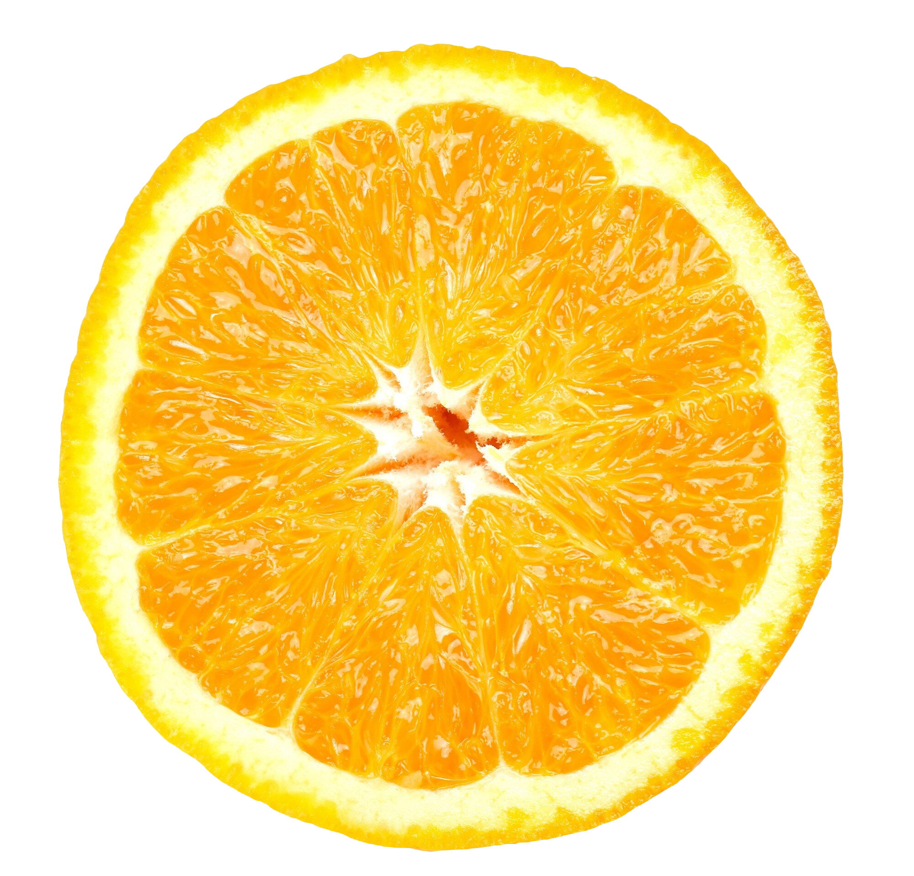
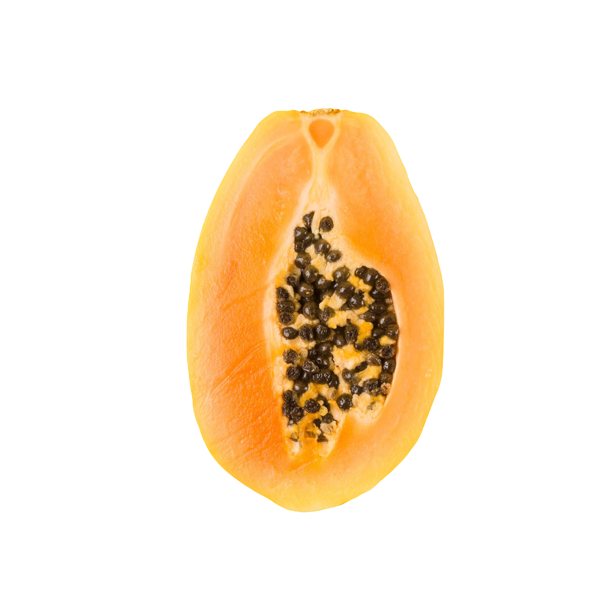
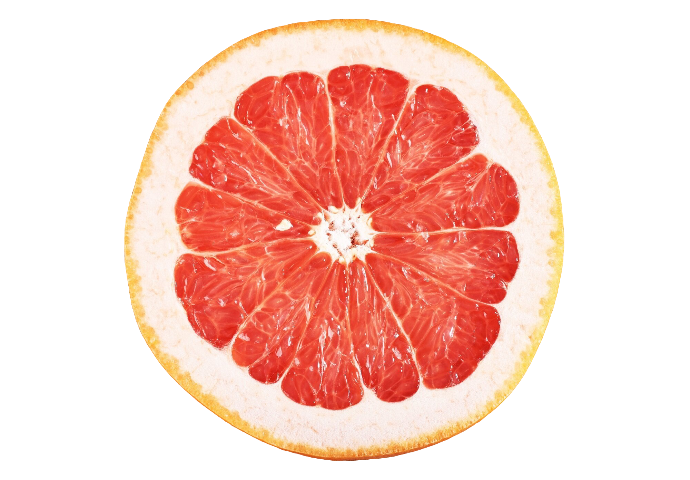
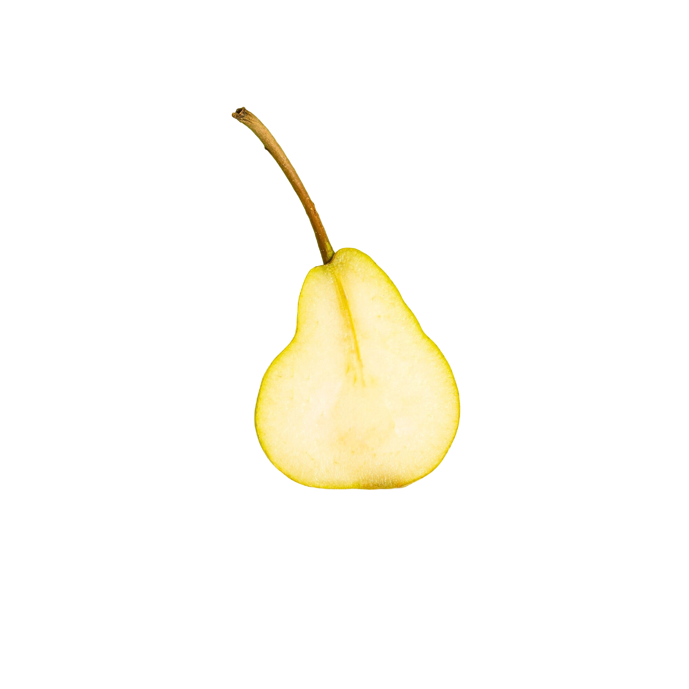

Mango
Mango is a tropical stone fruit
from the genus Mangifera. Known for its sweet, juicy flesh
and vibrant color, it is widely cultivated in warm climates.
Mangoes have a unique flavor profile that ranges from sweet to
slightly tart, depending on the variety.

Orange
An orange is a citrus fruit known for its
bright color and sweet-tart flavor. It is rich in vitamin C, fiber,
and antioxidants. Oranges are commonly eaten fresh, juiced, or used
in cooking and baking. They belong to the species Citrus sinensis and
are popular worldwide for their refreshing taste and health benefits.
Pineapple
Pineapple is a tropical fruit known for its
sweet and tangy flavor. It has a rough, spiky
exterior and a juicy, fibrous interior. Pineapples
are rich in vitamins, particularly vitamin C and manganese,
and contain bromelain, an enzyme that may aid digestion.

Papaya
Papaya is a tropical fruit
known for its sweet flavor and vibrant orange-yellow
flesh. It has a soft texture and is typically oval or
pear-shaped. Rich in vitamins A and C, papayas are also
a good source of dietary fiber and antioxidants.

Grapefruit
Grapefruit is a citrus fruit
known for its large size and distinctive tart flavor.
It is a hybrid of the pomelo and the orange, typically
characterized by its pink or red flesh, although yellow
varieties also exist.

Pear
A pear is a sweet, juicy fruit
that is typically bell-shaped and comes in various colors,
including green, yellow, and red. Pears belong to the genus
Pyrus and are known for their smooth
skin and soft, grainy texture.